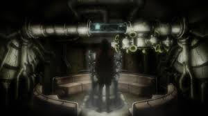
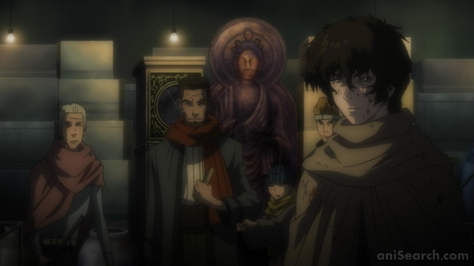
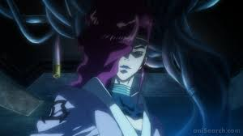
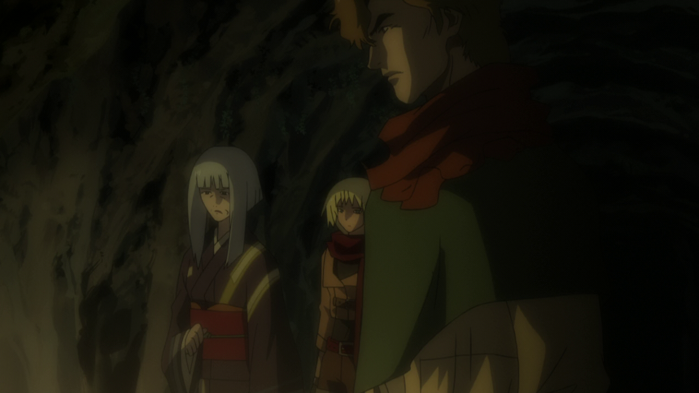

Kurozuka
Adaptation of Takashi Noguchi's manga, which itself adapts Baku Yumemakura's supernatural romance novel. The original novel is about a 12th-century man named Minamoto no Yoshitsune (Kurou). Kurou flees into the mountains after losing to his brother Minamoto no Yoritomo, the first Shogun to rule all of Japan.



